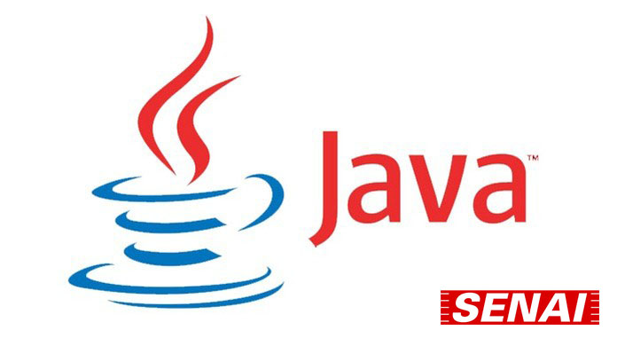

FPOO - Fundamentos de Programação Orientado a Objetos
A matéria de Hardware e Redes é dada pelo professor James Ferreira da Silva, focada na parte física do computador, voltado para redes e sistema operacional, onde é ensinado sobre protocolos de redes e em como confingura-los.
Fluxograma
O curso de Fundamentos de Programação Orientado a Objetos começa com sua partida teórica podendo ser feita no papel ou no computador. No início do curso você aprende sobre o fluxograma que servirá como um escopo para seu programa e te dando uma visão melhor sobre como você escreverá e quais elementos serão utilizado em seu código. Essa prática é excelente para ter uma visão geral de seu programa ou até mesmo para apresentar projetos.
Lógica de Programação
Após o entendimento do fluxograma, os alunos são inseridos no Portugol Studio, onde os alunos aprendem sobre o que são algoritmos, variáveis, aritmeticas, vetores e matrizes. Logo após se é entendido sobre lógica de programação com a IDE que é totalmente portuguesa, assim facilitando o entedimento de suas sintaxes e de como funcionam.
JAVA
Após os alunos se familiarizarem com as sintaxes e variáveis, eles são inseridos em JAVA já que a IDE do Portugol Studio é utilizada apenas para aprendizado. Para melhor entendimento, é passado a história do JAVA, falado sobre o que é JRE e JDK, como funcionam as sintaxes e suas bibliotecas como por exemplo o Scanner ou o JOptions para inserção de uma interface gráfica.